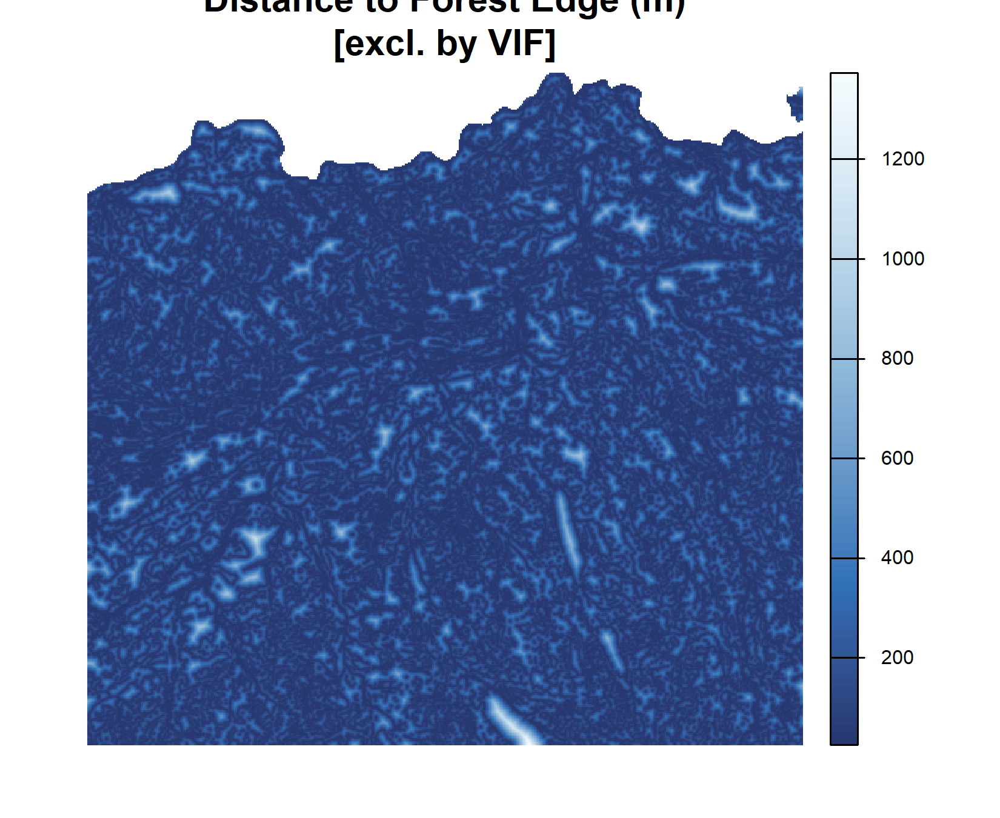
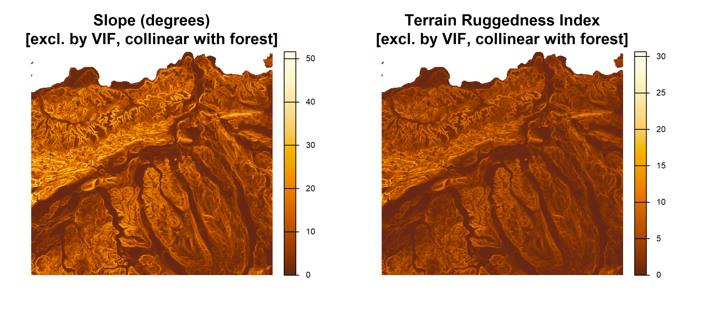
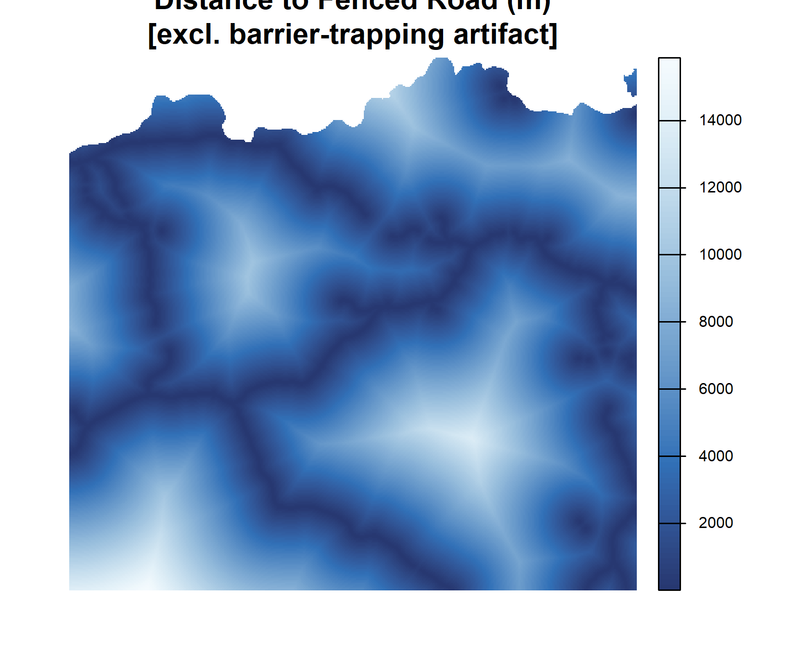

Appendix B — Statistical Outputs and Model Parameters
This appendix collects the full statistical output of the integrated step-selection function and the parameter settings of the five plugin analysis modules, so that the results in the main text can be reproduced and audited.
B.1 Final iSSF Coefficients
The final conditional logistic regression was fitted on 7,810 in-matrix transit steps from 36 GPS-collared individuals in Canton Aargau, each compared against ten random control steps. All covariates are z-standardised with the Aargau training mean and standard deviation. The seven retained coefficients, ordered by magnitude, are reproduced in ?tbl-issf-coefficients in the results chapter and summarised here for reference: forest density at the 50-metre scale (\(\hat{\beta} = 0.513\)), distance to railway (\(\hat{\beta} = 0.513\)), forest density gradient at the 1000-metre scale (\(\hat{\beta} = 0.245\)), distance to settlement (\(\hat{\beta} = 0.224\)), distance to main road (\(\hat{\beta} = 0.218\)), distance to secondary road (\(\hat{\beta} = 0.149\)), and distance to water (\(\hat{\beta} = 0.051\)). All coefficients were positive and significant at the 0.05 level, and all variance inflation factors for the retained set were below 1.4.
B.2 Variable Selection Record
| Covariate | Decision | Reason |
|---|---|---|
| Forest density 50 m | Retained | Strongest selection signal |
| Forest density gradient 1000 m | Retained | Macro-scale habitat context |
| Distance to water | Retained | Weak but significant |
| Distance to main road | Retained | Infrastructure avoidance |
| Distance to secondary road | Retained | Infrastructure avoidance |
| Distance to settlement | Retained | Infrastructure avoidance |
| Distance to railway | Retained | Strong avoidance, wider CI |
| Binary forest cover | Removed | Redundant with density layers |
| Distance to forest edge | Removed | Redundant with density layers |
| Slope | Removed | VIF > 80 with TRI, non-significant |
| Terrain Ruggedness Index | Removed | VIF > 80 with slope, non-significant |
| Distance to flowing water | Removed | Collinear with combined distance to water |
| Distance to lakes | Removed | Collinear with combined distance to water |
| Distance to fenced road | Removed | Barrier-trapping artifact (\(\hat{\beta} = -0.60\)) |
B.3 Plugin Analysis Parameters
The five analytical modules of the Wildboar Connectivity (ASF) plugin use the following fixed parameters. The analysis window extends 11,500 metres in each direction from the outbreak origin (a 10,000-metre buffer plus a 1,500-metre edge buffer). The infection-risk kernel uses the published mean natal dispersal distance of European wild boar of 4 kilometres, with the EFSA protection zone (3 km) and surveillance zone (10 km) mapped to risk thresholds of 0.50 and 0.15. The biased correlated random walk uses a von Mises concentration of \(\kappa = 2.0\), a 2,000-step limit, and 500 realisations by default. The iSSF-based individual movement model runs 2,000 agents by default, draws the infectious period from a \(\text{Gamma}(\alpha = 3, \beta = 3.5\,\text{days})\) distribution (mean 10.5 days), and generates 25 candidate steps per move using a gamma step-length kernel (shape 2.653, scale 160 m) and a von Mises turning kernel (\(\kappa = 1.064\)).
B.4 Reproducing the Statistical Output
The iSSF coefficient table, the step classification counts, and all covariate summary statistics reported in the results chapter are produced directly from the processed data files by the R code chunks embedded in 5-ergebnisse.qmd. Running the Quarto document against the processed data directory regenerates every table and figure deterministically.
B.5 Excluded Covariate Layers
The following maps document the covariate layers that were computed in the pipeline but excluded from the final iSSF model. They are provided here for completeness and spatial context.

